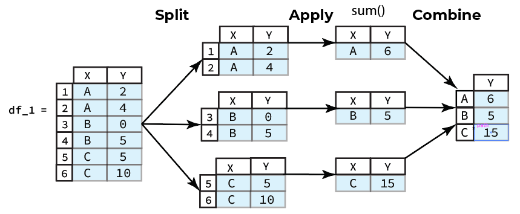
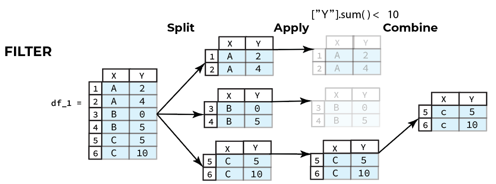
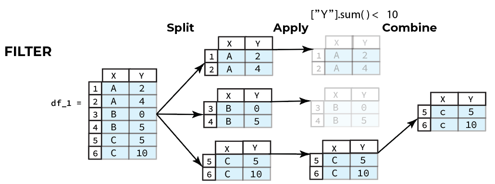

6. Advanced Operations on Series and DataFrames

Overview
Questions
- How do you apply operations on data chunks?
- How do you combin the results (processed chunks) into a new
DataFrame? - How do you create data chunks using values on one or more columns?
Objectives
- Learn how to apply functions to your data.
- Learn how to conditionally split data into chunks.
- Conceptually understand how groupby operations work before we delve into implementation
Global Vs. Group-Specific Processing
Function application falls into one of two categories:
- Global Processing
- Group Specific Processing
Global processing is applying the same function to every entry (referring to a singular data point or an entire row or column) in a Series or DataFrame. Group specific processing, on the other hand, is applying functions to entries that belong to a certain group based on some defining characteristic.
We will begin by covering global processing in the following sections.
1. Global Processing
In one clever way or another, every global processing problem you will ever run into when working with DataFrames will fit into one of two levels of granularity. Corresponding to these two levels are two DataFrame methods, apply() and applymap().
To apply a function to every row or column of a DataFrame we use the apply() DataFrame method. The apply() method takes a function that will be applied to the specified axis (columns or rows). Depending on the function it is passed, apply() can behave in the same way as the applymap() function.
1.1) Global Processing-apply()
The function passed to the apply() method will process a Series, i.e., a row or column, and return a result some result. Let us look at two example use cases, using a reducing function, and a universal function. A reducing function is one which takes a Series object and reduces the Series to a single entry. You are already familiar with some reducing functions such as the Series sum() method, which returns the sum of all the entries in the calling Series. Consider the following example of calling apply() with a reducing function.
Code:
df = pd.DataFrame([[ 0, 3, 6], [ 9, 12, 15], [18, 21, 24]], columns=['a', 'b', 'c'])
def square_sum(x_series):
return x_series.sum() ** 2
df.apply(square_sum, axis=1) # apply to each row
Output:
0 81
1 1296
2 3969
dtype: int64
The reducing function, square_sum() in the example above sums all the entries in the Series and the squares the result. You can define custom reducing functions just like we showed above to to achieve your desired analysis.
A universal function will return a new Series that was created by universally applying the same procedure to each Series entry. A universal function can be defined using the Series map() method. The map() method will take a function as an argument which will process each individual Series entry according to the function definition. For instance, refer to the following code example.
Code:
df = pd.DataFrame([[ 0, 3, 6], [ 9, 12, 15], [18, 21, 24]], columns=['a', 'b', 'c'])
def divide_by_three(x_series):
return x_series.map(lambda x: x / 3)
df.apply(divide_by_three, axis=0) # apply to each column
Output:
a b c
0 0.0 1.0 2.0
1 3.0 4.0 5.0
2 6.0 7.0 8.0
The example above shows how the apply() method behaves when a universal function is passed as the argument. The resulting DataFrame is constructed from original DataFrame except each entry is divided by three.
1.2) Global Processing-applymap()
There is a shorthand way to achieve the same exact behavior shown in the example of applying a universal function in the Global Processing-apply() cell above, and the method is appropriately named applymap(), as first we call the apply() DataFrame method and then we call the map() method.
To apply a function to every individual element in a DataFrame we can use the applymap() DataFrame method. The applymap() method is a function which takes one positional argument as input and that is a callable function which takes a single value and returns a single value. The applymap() method will apply the function passed to every single entry in the calling DataFrame and return a new DataFrame with the processed entries.
Let us see a simple example. We will construct a DataFrame df that is 3x3, i.e. there are three rows and three columns. The entries will be consecutive multiples of 3. To each entry we will apply the anonymous function: lambda x: x / 3 which will divide a given input by 3. The result will be a new 3x3 DataFrame with the same index and columns as the caller with entries that are the results of the passed function.
Code:
df = pd.DataFrame([[ 0, 3, 6], [ 9, 12, 15], [18, 21, 24]], columns=['a', 'b', 'c'])
df.applymap(lambda x: x / 3)
Output:
a b c
0 0.0 1.0 2.0
1 3.0 4.0 5.0
2 6.0 7.0 8.0
2. Group-Specific Processing
A common scenario is applying a function to a specific group of data. By group of data I mean a subset of the data that is the same based on a criterion.
The groupby() DataFrame method is used to group rows of data by one or more of the column entries . The groupby() method accepts the parameter by which specifies how you want to group the rows of the calling DataFrame. The creation of groups by can be a single column label, a list of column lables, or a callable function. The method will return a pandas GroupBy object, an object we have not seen before. This object has certain attributes and methods that will be useful to us. In this module, we will only cover the case of setting the by parameter of the groupby() method to a single column entry, if you are interested you can read more about the method here.
If by is a single label then the calling DataFrame will be grouped by the values in the column with the passed label, i.e. every entry with the same value in the specified column will be in the same group.
For example, consider the 20_sales_records.xlsx DataFrame from the previous week. To simplify things, we will select only Region, Order Priority, Sales Channel, Total Revenue and Total Profit columns and call it df.
Code:
import pandas as pd
URL = "https://github.com/mahdi-b/change-hi.github.io/raw/main/morea/data-wrangling-1/Notebook/data/20_sales_records.xlsx"
df = pd.read_excel(URL)
df = df.loc[:, ["Region", "Order Priority", "Sales Channel", "Total Revenue", "Total Profit"]]
df
Output:
| Region | Order Priority | Sales Channel | Total Revenue | Total Profit | |
|---|---|---|---|---|---|
| 0 | Australia and Oceania | H | Offline | 2533654.00 | 951410.50 |
| 1 | Central America and the Caribbean | C | none | 576782.80 | 248406.36 |
| 2 | Europe | none | Offline | 1158502.59 | 224598.75 |
| 3 | Sub-Saharan Africa | L | Online | 75591.66 | 19525.82 |
| 4 | Sub-Saharan Africa | L | Offline | 3296425.02 | 639077.50 |
| 5 | Australia and Oceania | C | Online | 759202.72 | 285087.64 |
| 6 | Sub-Saharan Africa | M | none | 2798046.49 | 693911.51 |
| 7 | Sub-Saharan Africa | H | Online | 1245112.92 | 510216.66 |
| 8 | Sub-Saharan Africa | M | Offline | 496101.10 | 152114.20 |
| 9 | Sub-Saharan Africa | H | Online | 1356180.10 | 584073.87 |
| 10 | Asia | H | Online | 19103.44 | 7828.12 |
| 11 | Sub-Saharan Africa | H | Offline | 455479.04 | 306097.92 |
| 12 | Asia | L | Online | 902980.64 | 606834.72 |
| 13 | Central America and the Caribbean | H | Offline | 5997054.98 | 1487261.02 |
| 14 | Asia | C | Offline | 400558.73 | 122819.06 |
| 15 | Europe | M | Online | 182825.44 | 122865.12 |
| 16 | Asia | M | Offline | 3039414.40 | 1208744.24 |
| 17 | Sub-Saharan Africa | C | Offline | 257653.50 | 85033.80 |
| 18 | Asia | L | Offline | 2559474.10 | 634745.90 |
For example, let us group the above df DataFrame by the values in the Region column and save the returned GroupBy object to the variable we will call grouped_by_region. To do this we use the following code.
For example, consider the following DataFrame:
Code:
grouped_by_region = df.groupby('Region')
GroupBy objects have a handy method called get_group(), which returns all the entries of a specified group as a DataFrame. The get_group() method will take a positional argument that is the name of the group to access. Then the method returns a DataFrame, which is a subset of the initial DataFrame used to instantiate the GroupBy object. The entries of the returned DataFrame are all those entries in the column specified by the by parameter in the original groupby() call that match the name used in the get_group() call.
Continuing with the example of the grouped_by_region object, let us see how we would retrieve the group of rows from the df whose entries in the df column were all the same value of ‘Asia’. This group will conveniently have the name ‘Asia’, thus when we use the get_group method we will simply pass the value ‘Asia’.
Code:
grouped_by_region.get_group('Asia')
Output:
| Region | Order Priority | Sales Channel | Total Revenue | Total Profit | |
|---|---|---|---|---|---|
| 10 | Asia | H | Online | 19103.44 | 7828.12 |
| 12 | Asia | L | Online | 902980.64 | 606834.72 |
| 14 | Asia | C | Offline | 400558.73 | 122819.06 |
| 16 | Asia | M | Offline | 3039414.40 | 1208744.24 |
| 18 | Asia | L | Offline | 2559474.10 | 634745.90 |
2.1) Split-Apply-Combine
Getting groups can be easily implemented using subsetting. For instance, we could have obtained the “A” group of the df DataFrame by subsetting df with the boolean Series returned from the following operation.
Code:
df[df.loc[:,"Region"]=="Asia"]
Output:
| Region | Order Priority | Sales Channel | Total Revenue | Total Profit | |
|---|---|---|---|---|---|
| 10 | Asia | H | Online | 19103.44 | 7828.12 |
| 12 | Asia | L | Online | 902980.64 | 606834.72 |
| 14 | Asia | C | Offline | 400558.73 | 122819.06 |
| 16 | Asia | M | Offline | 3039414.40 | 1208744.24 |
| 18 | Asia | L | Offline | 2559474.10 | 634745.90 |
We see in the above example that the returned DataFrame is exactly the same as the result we saw in the previous cell introducing groupby() and get_group(). So why use GroupBy objects anyway?
Ideal usage of groupby(), and the resulting GroupBy object, will apply operations to each group independently. Furthermore, GroupBy objects are intended to be applied in the context of the data processing paradigm called
“split-apply-combine”
- Split the data into chunks defined using one or more columns.
- Apply some operation on the chunks generated.
- Combine the results of the applied operation into a new
DataFrame.
For instance, suppose we wanted to compute the the sum by Region and save the result to a new DataFrame, the steps we would need to take are:
- Split the data by
X, i.e.groupby('Region') - Apply the
sum()method to theYcolumn for each group - Combine the results from each group into a new
DataFrame

So rather than manually subsetting each group and then applying the desired operation we could automate this workflow using the helpful GroupBy methods implemented by pandas to save ourselves some time and effort.
2.2) The 3 Classes of Opearations on Groups
There are 3 classes of split-apply-combine operations that can be applied to group data.
a. Aggregations generate a single value for each group
b. Transformations convert the data and generate a group of the same size as the original group.
c. Filters retain or discard a group based on group-specific boolean computations.

 

Key Points
Function Application and Mapping
- Global Processing
- To apply a function to every row or column in a
DataFramewe can use theapply()method - To apply a function to every element in a
Serieswe can use themap()method - To apply a function to every element in a
DataFramewe can use theapplymap()method
- To apply a function to every row or column in a
-
Group Specific Processing
-
The
groupby()method is used to group the data using values on one or more columns groupby()is often applied in the context of the data processing paradigm called “split-apply-combine”- Split: you need to split the data into chunks defined using one or more columns
- Apply: apply some operation on the chunks generated.
- Combine: combine the results of the applied operation into a new
DataFrame
-
There are 3 common classes of split-apply-combine operations that can be applied to group data.
-
Aggregations generate a single value for each group
-
Transformations convert the data and generate a group of the same size as the original group.
-
Filters retain or discard a group based on group-specific boolean computations.
-
-
For more information
You can read more about groupby from the official pandas documentation of groupby